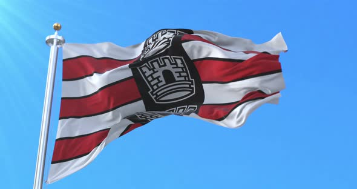

Andreza Gomes França da Silva
Sobre mim
Me chamo Andreza Gomes França da Silva e sou estudante do curso de Desenvolvimento Web. Sou apaixonada por animais, animes, jogos e fazer amigos. Tenhos muitos sonhos e objetivos, e estou determinada a alcançá-los. Acredito que a educação é a chave para o sucesso, e estou comprometida em aprender e crescer como profissional na área de desenvolvimento web.

João Pessoa é a capital do estado da Paraíba e possui uma rica história que remonta à sua fundação em 1585. Durante o período colonial, João Pessoa desempenhou um papel estratégico na ocupação do território nordestino e na consolidação do domínio português no Brasil. A cidade é conhecida por ser o ponto mais oriental das Américas, localizado na Ponta do Seixas, e é uma das cidades mais arborizadas do mundo, com uma rica herança cultural e patrimonial.